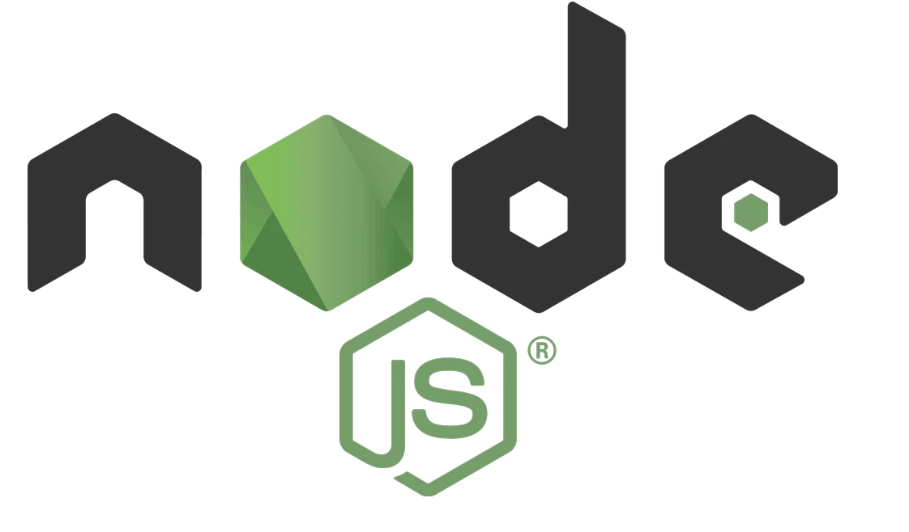

What's the Node.js and Why Everybody use it?
什么是Node.js,为何人人都在用它？
说到JavaScript的学习,大家都是以Node.js存在的前提进行的,
今天来说说这货到底是啥,它有啥用,为何人人都在用它呢.
基础: JavaScript的特征
首先,JavaScript和别的语言有什么区别呢？
JavaScript是在浏览器(比如Chrome、Firefox)上运行的一个编程语言。
但是其他的语言比如Python、Ruby之类的一般的编程语言都是在计算机上运行的。
这里就涉及到了能否直接连接使用OS的功能。
OS的基本功能, 比如说文件的读取动能、网络通信的功能等等。
能在计算机上直接运行的application(Python、Ruby)等是能够直接操作这些功能的。
但是在浏览器上运行的JavaScript是不能直接操作OS的功能的。比如说你打开网页的时候如果能直接通过浏览器对你的本地计算机文件进行操作，比如文件篡改删除等等,将会造成大问题的是不。
所以,浏览器上运行的JavaScript是不允许直接操作OS功能的。
但是如果完全禁止JavaScript使用OS功能的话还是有一些不方便,所以有时需要通过一些中介来操作一部分限定的OS功能。
最近的话比如摄像头和麦克风的操作权限可以通过中介获取,这样我们就可以在网络会议的时候使用了！
Node.js是啥？
上面说的这种只能在特定环境(浏览器)上运行的JavaScript也能像其他的Pythin语言一样能在OS上运行的东西就是Node.js。
容易被误会的是Node.js不是服务器,也不是像Rails、Django这样的Web框架。
它是JavaScript的运行环境。
在Windows安装Python的话会生成一个「python.exe」、而安装Node.js的时候也会生成一个「node.exe」
python.exe是操作系统中的一个运行Python代码的可执行文件(程序),
同理,node.exe也就是操作系统中的一个运行JavaScript代码的可执行文件(程序),
Node.js能够允许JavsScript操作OS功能。比如说之前在浏览器上不能操作文件之类的现在通过Node.js变得可能了。
它其实原来只是旨在构造一个能够处理大量同时连接处理的网络程序而已,经常可以听到「可以利用JavaScript来写一个服务器(而不是客户端网络)了」,使得人们有一个普遍的印象就是Node.js上服务器上的JavaScript的运行环境,是不是这个介绍其实更广为人知呢。
但是现在Node.js用在客户端网页的机会也增多了。
比如使用Babel,webpack之类来构建在「浏览器上运行的JavaScript」的开发环境的时候,就经常要用到Node.js.
可以说Node.js是在服务器端和客户端两边的JavaScript的运行环境。
npm是何方神圣？
在这里也顺便说一下什么是npm.
npm是Node.js的版本管理工具.
就像pip之于Python,gem之于Ruby,apt之于Debian,Homebrew之于Mac,cargo之于Rust.
yarn有时也会出来,可以看作是和npm差不多的东西.
而通过npm/yarn安装的package可以看作是库和框架之类的东西.
比如Vue,React,webpack,jQuery之类的东西.
在Node.js下如果有你想使用的库,就不用像以前一样下载js,并写入引用的代码<script src="xxx.js"></script>了.
直接使用npm安装就好！
为何人人都在用Node.js呢
使用Node.js的话能解开JavaScript的很多枷锁.
目前使用Node.js的人目的大概分为以下三类.
1.想使用新式的JavaScript或者TypeScript来编写客户端.
2.想用JavaScript来写一个web应用程序.
3.想写一个手机端/电脑端的程序.
下面来详细说一下:
1.想使用新式的JavaScript或者TypeScript来编写客户端
JavaScript基本每年都在更新,特别是ES2015之后更是加了很多便利的新功能.
但是JavaScript更新了,而浏览器却还是老样子并没有跟上JavaScript的脚步,导致了一些功能性的问题.
为了解决这个问题只能将「新样式的JavaScript文件」机械化地转换成「老版的(ES5)的javaScript文件」,从而让浏览器能够顺利地识别.
这样的转换工具(转换编译器)主流的就是Babel,而为了运行这个编译工具需要特定的运行环境,而Node.js通常作为配套使用.
2.想用JavaScript来写一个web应用程序.
就像Ruby+Rails,Python+Django来写一个程序一样,Node.js也能帮你实现。
| 実行環境 | 言語 | Webフレームワーク |
|---|---|---|
| Ruby | Ruby | Ruby on Railsなど |
| Python | Python | Djangoなど |
| Node.js | JavaScript | Expressなど |
通常像Apache和nginx一样使用Node.js作为服务器代理可以直接接收HTTP的request并进行处理.
但实际上Node.js作为网络服务器的话还是有一点功能不齐全,有时会在它之间使用Apache或者nginx来进行反向代理.
关于正向代理和反向代理
正向代理隐藏了真实的请求客户端,服务端不知道真实的客户端是谁,客户端的请求都被代理服务器代替来请求.
而反向代理隐藏了真实的服务端,反向代理服务器会帮助我们把用户端的请求转发到真实的服务器那里去.nginx就是性能非常好的反向代理服务器,常用于复杂均衡.
也就是说正向代理代理的对象是客户端，反向代理代理的对象是服务端.
3.想写一个手机端/电脑端的程序
Node.js也可用于手机端或者电脑端的开发.
手机端的框架的话常见的有React Native,电脑端的有Electron.
4.其他
其他的还有,将网页的部件进行打包(webpack)的时候，Node.js就能发挥作用了,比如Sass转换成CSS(node-sass)的时候就用到Node.js,测试工具(Jtest),代码检测工具(ESLint)的时候也需要Node.js,还有想搭建一个简易的本地服务器(webpack-dev-server)的时候也用到Node.js,还有搭建静态页面(Gatsby)的时候也需要使用Node.js.
可以看到Node.js有很多实用的功能呢.